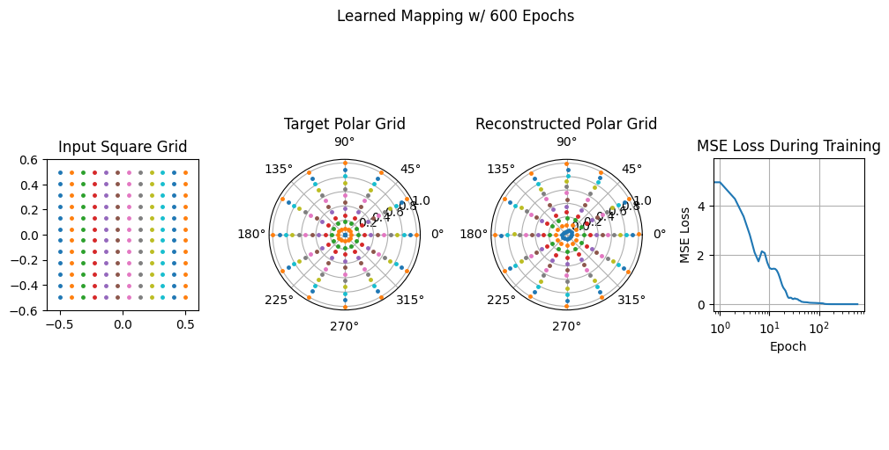

Homeomorphic AutoEncoder
Motivation
A homeomorphism is a continuous, invertible map between two spaces whose inverse is also continuous — intuitively, a way to smoothly deform one shape into another without tearing or gluing. What makes homeomorphisms between coordinate systems so appealing is that they let you do hard work in an easy space and carry the answer back.
The concrete payoff is in solving differential equations. Numerical methods are far simpler on a regular Cartesian grid — a plain square mesh — than on an awkward domain like a disk or an annulus. If you had a homeomorphic map between a square grid and, say, a polar grid, you could solve your equation on the friendly square, then map the solution onto the polar domain where you actually need it. Mesh generation, finite-difference stencils, boundary conditions: all of it gets easier if you can move freely between coordinate systems. That is the dream that started this project — could a neural network learn such a map directly from data?
The honest answer this post arrives at is: not the way I tried it here. This was a failed experiment. But the failure is instructive, and the motivation is strong enough that I'm planning a better attempt.
Methodology
I framed the problem as learning the map from a square grid to a polar grid. The two point sets are generated directly:
# square grid
x = np.linspace(-.5, .5, n_points_per_edge)
X, Y = np.meshgrid(x, x)
# polar (target) grid
theta = np.linspace(0, 2*np.pi, n_points_per_edge, endpoint=False)
r = np.linspace(0, 1, n_points_per_edge)
radius_matrix, theta_matrix = np.meshgrid(r, theta)
The model is a small PyTorch "autoencoder": an encoder that takes a 2D point down through hidden layers to a 2D latent code, and a decoder that expands it back to 2D.
class Autoencoder(nn.Module):
def __init__(self):
super().__init__()
self.encoder = nn.Sequential(
nn.Linear(2, 64), nn.ReLU(),
nn.Linear(64, 32), nn.ReLU(),
nn.Linear(32, 2)) # latent space
self.decoder = nn.Sequential(
nn.Linear(2, 32), nn.ReLU(),
nn.Linear(32, 64), nn.ReLU(),
nn.Linear(64, 2)) # back to (x, y)
def forward(self, x):
return self.decoder(self.encoder(x))
Training is a plain regression: feed in the square-grid points, ask for the polar-grid points, and minimize mean-squared error with Adam over a few hundred epochs.
output = autoencoder(square_grid_points)
loss = criterion(output, polar_grid_points) # MSE against the target grid
I also rendered the morph as an animation, watching the square grid deform toward the target polar grid frame by frame as training progressed.
Results
On the surface it looks like it works. The MSE loss falls steadily and the reconstructed polar grid lands roughly on top of the target.

But this is exactly where the experiment fails its own goal. What the network actually learned is not a homeomorphism — it's a lookup table. A few things went wrong, and they're baked into the setup:
- Nothing enforces the map's defining properties. A homeomorphism must be continuous and invertible with a continuous inverse. MSE regression imposes none of that. The model is free to learn a mapping that is discontinuous between the sampled points, or non-invertible, and the loss won't care.
- It memorizes a finite point correspondence. The network only ever sees the fixed set of grid points and their fixed targets, so it fits those pairs rather than a function defined everywhere on the square. Hand it a point that isn't one of the training samples and there's no reason its image is meaningful.
- The "autoencoder" framing is cosmetic. A real autoencoder compresses to a latent space and reconstructs its input; here both halves are just an MLP regressing input → different target, so the encoder/decoder split buys nothing and there's no learned inverse map to carry solutions back the other way.
So while the picture is encouraging, the result is not a usable coordinate transform: I can't take an arbitrary field on the square, push it through, and trust the polar version. As a tool for solving PDEs across coordinate systems — the entire point — it doesn't deliver.
What's Next
The motivation hasn't gone anywhere; only the architecture was wrong. A grid is naturally a graph — nodes connected to their neighbors — and the property I actually care about (local continuity, neighbors staying neighbors) is exactly the kind of structure a graph neural network is built to respect. Now that I've started learning about GNNs, my next attempt will be to learn this square-to-polar mapping with a graph neural network, where the connectivity of the grid is part of the model rather than something MSE has to accidentally rediscover. That feels like the right tool for turning this failed experiment into a working one.